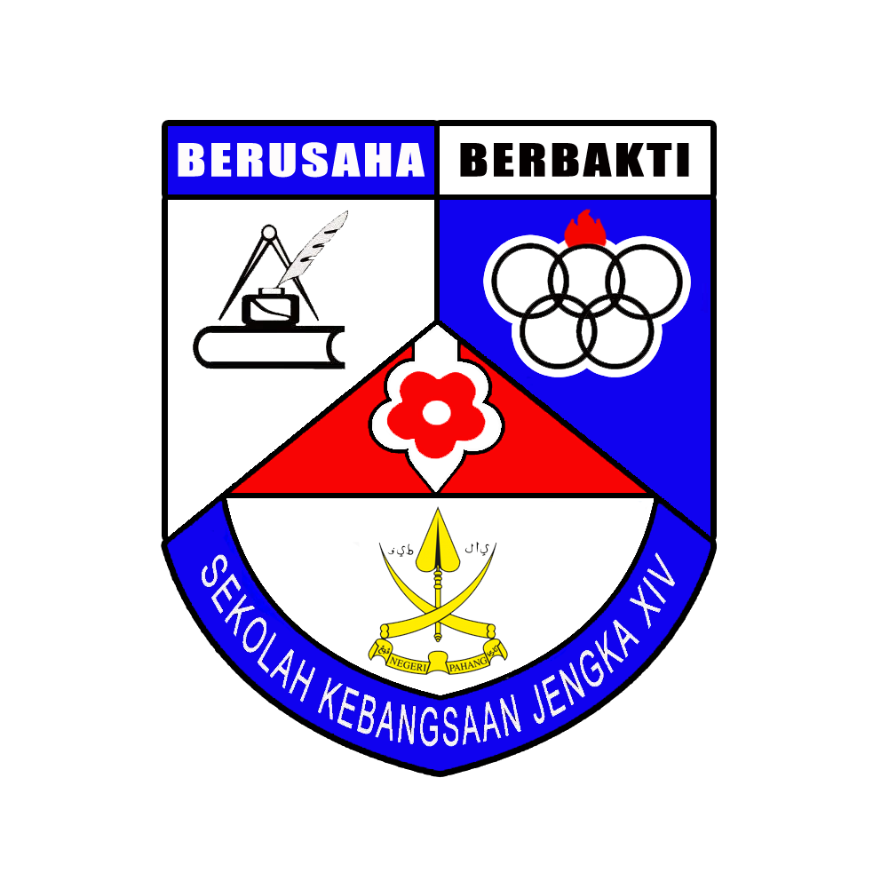

𝓗𝓮𝓵𝓵𝓸! 𝓜𝔂 𝓷𝓪𝓶𝓮 𝓲𝓼 ğ“œğ“¾ğ“±ğ“ªğ“¶ğ“¶ğ“ªğ“ 𝓓𝓪𝓷𝓲𝓪𝓵 𝓗𝓪𝓲𝓺𝓪𝓵 𝓑𝓲𝓷 𝓚𝓱𝓪𝓲𝓻𝓾𝓵 𝓗𝓲𝓼𝓪𝓶
EDUCATION
🅻🅸🆅🅸🅽🅶 🅼🆈 🅱🅴🆂🆃 🅻🅸🅵🅴.
SEKOLAH KEBANGSAAN (LKTP) JENGKA 14
My elementary school was a small, lovely establishment concealed away in a peaceful area. Every classroom was  cheerful with educational charts, vibrant posters, and student artwork hanging on the walls. The teachers encouraged a welcoming and inclusive environment with their enthusiasm and nurturing. The well-rounded curriculum provided a comprehensive education by combining academic subjects with creative arts. Children were having a great time on the playground, making friends and playing sports during lunchtime. Furthermore, I was choosen by the teacher as a head student. I really enjoy my primary school life.
SBP Integrasi Tun Abdul Razak
I went to SBPI Pekan from 2016-2020. There are so many memories with friends and teachers whether it is happy or sad. This school taught me a lot about the meaning of life especially about the challenges I will face in going through the twists and turns of life.
Kolej Matrikulasi Pahang
After getting the SPM results, I got an offer to continue my education to Matriculation Pahang for 2 years. In Matriculation,I participated in some interesting activities that developed my identity to face the challenging University life.

Universiti Teknologi MARA (UiTM) Cawangan Kedah Kampus Sungai Petani
Now I am continuing my studies at UITM Kedah in the Library Management course. There are 3 more semesters left before I successfully finish my studies and got a bachelor's degree